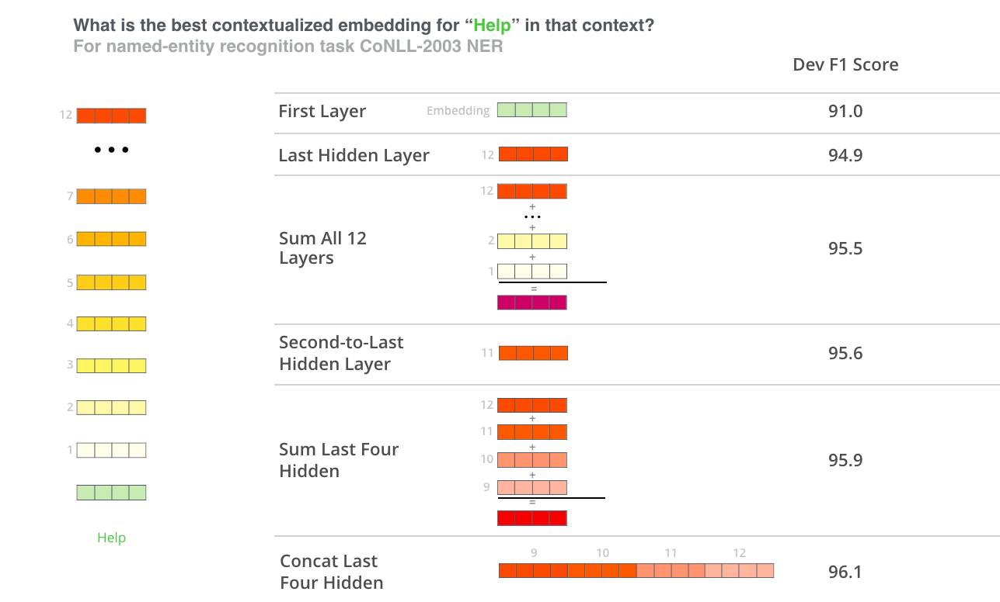

BERT in DLATK
BERT is a contextual word embedding model. It converts words to numeric vectors that capture semantic information. Recommended reading about BERT:
DLATK enables extraction of BERT features from messages. These features are stored, as you might expect, in feature tables!
Prerequisites
You must have a msgs table in MySQL containing a message column.
You must also ensure that punkt is installed for NLTK. This can be accomplished with the following command:
python -m nltk.downloader punkt
1. Preparing messages
Messages need to be split using --add_sent_tokenized:
dlatkInterface.py -d dla_tutorial -t msgs_xxx -c user_id --add_sent_tokenized
This will create the table msgs_xxx_stoks with a messages column containing arrays of messages. Remember to replace xxx with your initials!
2. Adding BERT features
The simplest way to add BERT embeddings, accepting all defaults, is with the --bert_model flag:
dlatkInterface.py -d dla_tutorial -t msgs_xxx -c user_id --add_bert
Note that the BERT features this adds will be aggregated at several levels:
Layers
Words
Messages
BERT layers are aggregated to produce a single vector representation of a word. Words are aggregated to produce message-level vector representations. Messages are aggregated to produce vector representations at the level of the grouping factor (-g). In the command above, this means messages are aggregated to produce user-level vector representations.
This command uses all BERT defaults. However, it is possible to customize BERT features in a number of ways:
../fwinterface/fwflag_bert_word_aggregation
In the following subsections, we discuss these flags in more detail.
--bert_model
The most important option for BERT is the choice of model using the --bert_model flag. Any Hugging Face pretrained models may be used here. By default, BERT features are extracted using the bert-base-uncased model; you can specify other models like so:
dlatkInterface.py -d dla_tutorial -t msgs_xxx -c user_id --add_bert --bert_model large-uncased
Note that the command above doesn't specify bert-. If you use a model named base-* or large-*, DLATK will assume you're referring to a BERT model. You can specify other models using the full name, for example:
dlatkInterface.py -d dla_tutorial -t msgs_xxx -c user_id --add_bert --bert_model cl-tohoku/bert-base-japanese
--bert_layers
BERT produces multiple layers of embeddings (because it is a deep network, so each network layer produces a layer of embeddings!). Roughly speaking, later layers embed more abstract representations of features, while earlier layers represent more concrete ones. It is typical to combine some or all of these layers in order to capture this breadth of representation:
To specify which layers you want to aggregate over, use the --bert_layers flag. This flag takes as arguments the indexes of each layer you want to keep. For example, we might run the following to keep the last two layers:
dlatkInterface.py -d dla_tutorial -t msgs_xxx -c user_id --add_bert --bert_model large-uncased --bert_layers 10 11
Notice that layers are 0-indexed, i.e., the 0th layer is the earliest one, while the 11th is the last one.
Aggregation
As discussed above, there are two levels of aggregation when adding BERT features: layer and message. These can be specified with the following flags:
It is important when running these aggregations to remember that you're choosing a numpy method, and that it will be applied to the 0th axis (i.e., it will be applied across layers). Here's an example:
dlatkInterface.py -d dla_tutorial -t msgs_xxx -c user_id --add_bert --bert_model large-uncased --bert_layer_aggregation mean --bert_msg_aggregation max
It is also possible to specify multiple aggregations (though this currently does not work for layer aggregations). Aggregations will be applied in the order that you specify them.
3. Understanding BERT Feature Table Names
BERT feature tables have names that might look confusing, but actually reveal all the details about how the features were computed. If you don't yet understand feature table naming conventions in DLATK, please read Understanding Feature Table Names before continuing.
Let's say you have a BERT feature table called feat$bert_ba_un_meL10co$messages_en$user_id$16to16. Here's how to interpret the segment bert_ba_un_meL10co:
bert
base_uncased
mean aggregated messages
Layer 10
concatenated layers
Some of these may be repeated: each layer selected with --bert_layers, for example, will appear in the name.
4. Using BERT features
Let's say you've generated default BERT features with the following command:
dlatkInterface.py -d dla_tutorial -t msgs_xxx -c user_id --add_bert
This will create the table feat$bert_ba_un_meL10con$msgs_xxx$user_id$16to16 in the dla_tutorial database. How do you make use of these features?
The answer is, essentially, like any other feature table in DLATK! (See Intro Prediction / Classification / Predictive Lexica if you don't know how to use feature tables.) For example, let's say you want to predict age from the blog_outcomes table in the dla_tutorial database (just like in Intro Prediction / Classification / Predictive Lexica). This would look like:
dlatkInterface.py -d dla_tutorial -t msgs_xxx -c user_id -f 'feat$bert_ba_un_meL10con$msgs_xxx$user_id$16to16' --outcome_table blog_outcomes --group_freq_thresh 500 --outcomes age --output_name xxx_age_output --nfold_test_regression --model ridgecv --folds 10
This will run a ridge regression model through 10-fold cross validation, predicting age, and using BERT embeddings as features in the model. You should see lots of output, ending with something like this:
[TEST COMPLETE]
{'age': {(): {1: {'N': 978,
'R': 0.6618386965904822,
'R2': 0.43803046030458836,
'R2_folds': 0.4233643081827411,
'mae': 4.619034298134363,
'mae_folds': 4.616423448270654,
'mse': 38.854440157161314,
'mse_folds': 38.820150245521624,
'num_features': 768,
'r': 0.6621098985283438,
'r_folds': 0.6694097453791333,
'r_p': 2.0416764169778933e-124,
'r_p_folds': 1.783371417616072e-11,
'rho': 0.7107187086007063,
'rho_p': 2.9543434601896134e-151,
'se_R2_folds': 0.02206729102836306,
'se_mae_folds': 0.11535169076175808,
'se_mse_folds': 1.859884969097588,
'se_r_folds': 0.01581679229802067,
'se_r_p_folds': 9.484973024855944e-12,
'se_train_mean_mae_folds': 0.20067386714575627,
'test_size': 105,
'train_mean_mae': 4.335374453708489,
'train_mean_mae_folds': 6.464315148935017,
'train_size': 873,
'{modelFS_desc}': 'None',
'{model_desc}': 'RidgeCV(alphas=array([1.e+03, 1.e-01, '
'1.e+00, 1.e+01, 1.e+02, 1.e+04, 1.e+05]), '
'cv=None, fit_intercept=True, gcv_mode=None, '
'normalize=False, scoring=None, '
'store_cv_values=False)'}}}}
Comparing these results against those from Intro Prediction / Classification / Predictive Lexica, we can see that BERT features get a Pearson r of 0.6621, outperforming LDA topics + unigrams, which get an r of 0.6496.
There's a natural question we've glossed over here: what exactly do the BERT features look like? We can check the contents of the feature table in MySQL:
mysql> SELECT * FROM feat$bert_ba_un_meL10con$msgs_xxx$user_id$16to16 LIMIT 10;
+----+----------+------+-----------------------+-----------------------+
| id | group_id | feat | value | group_norm |
+----+----------+------+-----------------------+-----------------------+
| 1 | 666 | 0me | -0.20481809973716736 | -0.20481809973716736 |
| 2 | 666 | 1me | -0.48483654856681824 | -0.48483654856681824 |
| 3 | 666 | 2me | 1.1650058031082153 | 1.1650058031082153 |
| 4 | 666 | 3me | -0.5072966814041138 | -0.5072966814041138 |
| 5 | 666 | 4me | 0.40456074476242065 | 0.40456074476242065 |
| 6 | 666 | 5me | -0.6585525274276733 | -0.6585525274276733 |
| 7 | 666 | 6me | -0.019926181063055992 | -0.019926181063055992 |
| 8 | 666 | 7me | 0.2585161030292511 | 0.2585161030292511 |
| 9 | 666 | 8me | -0.2901904881000519 | -0.2901904881000519 |
| 10 | 666 | 9me | -0.2664993405342102 | -0.2664993405342102 |
+----+----------+------+-----------------------+-----------------------+
The names of the feat column may seem a bit opaque at first, but they are simple to interpret: the number indicates the index of the dimension in the BERT embedding vector, while the me indicates that the message embeddings were aggregated using the mean. If you have specified multiple message aggregations, these will appear as separate features. Since BERT produces vectors of length 768, this means each group_id will have 768 * [number of message aggregations] features. Each dimension of the aggregated BERT embedding vector then serves as a distinct feature in the predictive model.